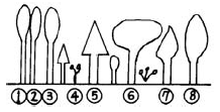
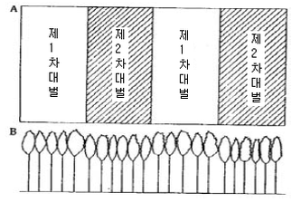
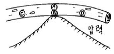
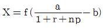

산림산업기사(구60문항) (2005-05-29 기출문제)
1과목: 임의구분
1. 다음 병원체 중 기공을 통하여 감염되는 것은?
- 소나무잎떨림병
- 오동나무빗자루병
- 밤나무뿌리혹병
- 낙엽송가지끝마름병
(정답률: 70%)

2. 액제 살포에 대한 설명으로 옳지 않은 것은?
- 바람을 등지고 살포한다.
- 일반적으로 분무기를 사용한다.
- 살포시에는 반드시 경수를 사용한다.
- 수화제는 물에 용해되지 않은 체 살포된다.
(정답률: 80%)
3. 해충의 생물학적 방제의 장점이 아닌 것은?
- 생물적 방제는 효과가 영구적으로 지속된다.
- 해충밀도가 낮을 경우 효과를 거둘 수 있다.
- 해충밀도가 위험한 밀도에 달하였을 때 아주 효과적이다.
- 친환경적인 방법으로 생태계가 안정된다.
(정답률: 73%)
4. 다음 중 묘포에서 늦서리의 피해를 막는 방법 중 틀린 것은?
- 주풍 방향에 방풍림을 조성한다.
- 배수가 잘 되도록 한다.
- 피해를 받기 쉬운 수종은 파종을 가능한 빨리 한다.
- 묘상에 낙엽이나 짚을 덮어 묘목을 보호해 준다.
(정답률: 40%)
5. 다음 중 파이토플라스마에 의한 병해가 아닌 것은?
- 벚나무빗자루병
- 오동나무빗자루병
- 대추나무빗자루병
- 뽕나무오갈병
(정답률: 55%)
6. 주요 해충에 대한 방제법 중 천적에 관한 내용 중 적당하지 않은 것은?
- 조류는 불나방류, 텐트나방의 중요한 천적이다.
- 포식곤충인 풀잠자리류는 진딧물과 깍지벌레의 천적이다.
- 맵시벌류는 중요한 기생종이며 알을 해충의 알 또는 체내에 낳는다.
- 병원생물도 중요한 천적자원이며 솔노랑잎벌, 솔나방, 배추흰나비 등의 해충에서 발견된다.
(정답률: 50%)
7. 전체 개체수가 200마리라면 이 곤충 암컷의 비율은? (단, 곤충의 성비는 0.55)
- 55마리
- 90마리
- 45마리
- 110마리
(정답률: 59%)
8. 대부분의 녹병은 다음 중 어느 병원균에 의하여 발병하는가 ?
- 바이러스
- 마이코플라즈마
- 박테리아(세균)
- 곰팡이(진균)
(정답률: 73%)
9. 다음 중 잣나무털녹병균이 잣나무에 침입하는 부위로 맞는 것은?
- 잣나무 줄기
- 잣나무 뿌리
- 잣나무 가지
- 잣나무 잎
(정답률: 37%)
10. 농약의 제제 과정에서 물에 잘 녹지 않는 약제를 잘 녹는 용제에 녹여 유화제를 가해서 만든 농약으로 맞는 것은?
- 분제
- 유제
- 수용제
- 수화제
(정답률: 62%)
11. 종자의 천립중(실중)을 설명한 것은?
- 소립종자는 1,000립씩 4회 평량한 평균무게이다.
- 소립종자는 10,000립씩 4회 평량한 평균무게이다.
- 소립종자는 100립씩 3회 평량한 평균무게이다.
- 소립종자는 1,000립씩 3회 평량한 평균무게이다.
(정답률: 60%)
12. 묘목을 선별하는 규격에 해당되지 않는 것은?
- 흉고직경
- 묘목의 크기
- 근원직경
- 뿌리의 길이
(정답률: 40%)
13. 다음 중 해안조림에 가장 적합한 수종은?
- 해송
- 분비나무
- 낙우송
- 전나무
(정답률: 82%)
14. 건조하고 척박한 곳에서도 잘자라는 수종은?
- 삼나무
- 느티나무
- 오리나무
- 후박나무
(정답률: 50%)
15. 가지치기에 가장 알맞는 시기는?
- 늦은 봄
- 여름
- 여름 - 가을
- 초겨울 - 초봄
(정답률: 70%)
16. 제벌 작업시 제거되어야 할 나무를 그림상에서 고른다면 어느 것이 되겠는가?

- ①, ⑤
- ②, ⑤
- ②, ⑥
- ⑤, ⑧
(정답률: 70%)
17. 천연갱신에 관한 설명 중 틀린 것은?
- 천연갱신은 천연하종, 맹아갱신 등에 의해 이루어진다.
- 자연적인 상태하에서의 천연갱신은 양수인 경우보다 음수가 더 유리하다.
- 천연하종갱신의 실시는 모수에 종자가 많이 맺힌 해를 택하여 실시해야 한다.
- 천연갱신은 인공갱신에 비하여 각종 피해에 대하여 저항력이 약하다.
(정답률: 64%)
18. 파종하기 1개월 전에 노천매장해야 할 수종으로 짝지은 것은?
- 잣나무, 느티나무
- 삼나무, 소나무
- 층층나무, 피나무
- 들매나무, 은행나무
(정답률: 55%)
19. 다음 중 삽수발근에 관여하는 인자 중 생리적 조건이 아닌 것은?
- 모수의 나이와 영양 상태
- 채취된 모수의 위치
- 삽목의 시기
- 조직분화의 정도
(정답률: 20%)
20. 예비벌, 하종벌, 후벌의 단계를 거쳐 갱신이 완료되는 작업법은?
- 간벌작업
- 택벌작업
- 산벌작업
- 모수작업
(정답률: 30%)
2과목: 임의구분
21. 묘목의 가식장소를 잘못 설명한 것은?
- 온도가 낮게 유지되는 응달
- 흙이 알맞은 습도를 가지는 곳
- 비, 바람을 막을수 있는 막사
- 관, 배수가 용이한 곳
(정답률: 59%)
22. 간벌 방법 중 줄기의 형태와 수관의 특성으로 구분되는 수관급을 바탕으로 해서 정해진 간벌 형식에 따라 간벌 대상목을 선정하는 방법이 아닌 것은?
- 정량 간벌
- 하층 간벌
- 기계적 간벌
- 택벌식 간벌
(정답률: 55%)
23. 개벌작업 중 아래 그림과 같이 임분을 대의 계열로 나누어 하는 작업은?

- 연속대상개벌법
- 교호대상 개벌법
- 군상개벌법
- 대면적개벌법
(정답률: 55%)
24. 중림작업법의 장점에 해당하지 않는 것은?
- 임지의 노출이 방지된다.
- 상목은 수광량이 많아서 좋은 성장을 하게 된다.
- 하목은 맹아발생과 성장이 촉진된다.
- 각종 피해에 대한 저항력이 크다.
(정답률: 46%)
25. 임지와 임목의 건전한 생산성을 위하여 심어주는 부목적 또는 보조적인 임목을 비료목이라 한다. 다음 중 비료목이 아닌 수종은?
- 아카시나무, 족제비싸리
- 오동나무, 향나무류
- 싸리류, 자귀나무
- 칡, 오리나무
(정답률: 70%)
26. 체인톱 작업시 체인톱의 진동을 줄일 수 있는 방법은?
- 체인톱의 스파이크를 나무에 밀착하고 절단한다.
- 배기장치를 증대시킨다.
- 절단시 찔레베기를 한다.
- 안내판 아래 쪽의 체인으로 절단한다.
(정답률: 70%)
27. 산림작업시 안전사고 예방을 위하여 지켜야 할 사항이다. 이 중 옳지 않은 것은?
- 휴식 직후에는 서서히 작업속도를 높일 것
- 작업 실행에 심사숙고 할 것
- 긴장하지 말고 부드럽게 할 것
- 휴식과 관계없이 능률을 높이기 위하여 열심히 할 것
(정답률: 80%)
28. 다음 동력 살분기에 관한 설명 중 옳지 않은 것은?
- 분출 분무기에 비하여 살포입자가 크다.
- 매개물이 20%의 공기로 이루어졌다.
- 분출 분무기의 분출에 비하여 3 ~ 10배의 농도를 유지한다.
- 분출 분무기에 비하여 바람에 취약하다.
(정답률: 60%)
29. 다음 그림과 같이 지형지물에 원목(原木)이 걸쳐 있을 때에 장력(張力)을 받는 부분은?

- Ⓐ
- Ⓑ
- Ⓒ
- Ⓓ
(정답률: 67%)
30. 다음 중 집재작업에 쓰이는 기계가 아닌 것은?
- 트랙터
- 집재기
- 윈찌
- 도져
(정답률: 70%)
31. 체인톱의 구조를 볼 때 동력전달부분에 속하는 것은?
- 피스톤
- 크랭크 축
- 안내판
- 원심분리형 클러치
(정답률: 50%)
32. 예불기를 사용할 때 작업자의 안전수칙이 아닌 것은?
- 기계를 점검, 조정하고 사용에 유의한다.
- 간편한 복장, 편하고 미끄럽지 않는 신발을 착용한다.
- 톱날 끝에 금이 갔을 때는 사용을 금한다.
- 급경사지에서는 위험하므로 하부에서 상부로 작업을 실행한다.
(정답률: 80%)
33. 체인톱의 일일정비에 관한 사항이 아닌 것은?
- 휘발유와 오일의 혼합
- 에어휠터의 청소
- 안내판의 손질
- 스파크 플러그의 외부점검
(정답률: 40%)
34. 2행정기관에 사용되는 연료의 혼합비(휘발유:오일)로 가장 옳은 것은?
- 1 : 20
- 1 : 25
- 20 : 1
- 25 : 1
(정답률: 70%)
35. 다음은 체인톱날의 규격을 측정하는 요령이다. 맞는 것은?
- 톱니의 피치(톱니사이의 간격)는 3개의 연결 리벳간의 간격을 측정하여 2로 나누어서 인치로 표시한 것이다.
- 톱니의 피치는 2개의 연결 리벳간의 간격을 측정하여 인치로 표시한다.
- 톱니의 피치는 3개의 연결 리벳간의 간격을 측정하여 인치로 표시한다.
- 톱니 2개의 연결 리벳간의 간격을 측정하여 ㎜로 표시한다.
(정답률: 50%)
36. 다음 중 윤활유가 아닌 것은?
- 엔진오일
- 기어오일
- 그리이스
- 방카C유
(정답률: 73%)
37. 상사점이 19cm, 하사점이 10cm 일 때 행정의 크기는 얼마인가 ?
- 29cm
- 19cm
- 10cm
- 9cm
(정답률: 55%)
38. 남자 1인이 폭 30cm, 깊이 30cm로 구덩이를 계속 파 나가고 여자 1인은 구덩이에 식재한 후 뒤따르는 작업조직 명칭은?
- 1인 연속 식혈작업법
- 2인1조 분리작업법
- 2인1조 연속작업법
- 1인 분리 식혈작업법
(정답률: 46%)
39. 기관의 오일 색깔이 붉은 빛깔이 나타났다. 어떤 현상 인가 ?
- 가솔린이 침입되었다.
- 오일이 심하게 오염이 되었다.
- 기관에 냉각수가 침입되었다.
- 오일량이 줄어 들었다
(정답률: 60%)
40. 경운, 정지 등 견인작업에 적합하도록 만들어진 트랙터는 ?
- 표준형 트랙터
- 범용형 트랙터
- 과수원용 트랙터
- 정원용 트랙터
(정답률: 60%)
3과목: 임의구분
41. Ⅲ영급 임분은 임령이 다음 중 어디에 속하는 임분을 말하는가 ?
- 11 ~ 20 년생
- 21 ~ 30 년생
- 31 ~ 40 년생
- 41 ~ 50 년생
(정답률: 64%)
42. 시장역산가식이

일 때 조재율이 90%, 원목가가 80000원/m3, 생산비가 40000원/m3이고, 1 + r + np ≒ 1.0 이라면 입목가격은 얼마인가 ?- 40,000원
- 38,000원
- 36,000원
- 30,000원
(정답률: 50%)
43. 임업이율의 성격을 바르게 나타낸 것은?
- 현실 이율
- 실질적 이율
- 단기 이율
- 평정 이율
(정답률: 40%)
44. 다음 중 삼림조사의 임황조사 사항이 아닌 것은?
- 입목도
- 재적
- 생장율
- 지위
(정답률: 25%)
45. 임업경영은 국토보안·수원함양·자연보호 등의 기능을 충분히 발휘할 수 있도록 운영하여야 한다는 의미를 갖고 있는 임업경영의 원칙은 무엇인가?
- 합자연성의 원칙
- 환경보전의 원칙
- 공공성의 원칙
- 생산성의 원칙
(정답률: 60%)
46. 회귀년과 관련된 내용 중 틀린 것은?
- 회귀년 길이의 장단은 택벌림의 축적과 벌채량에 서로 상반된 현상이 나타나게 한다.
- 회귀년이 짧으면 면적당 벌채될 재적이 많다.
- 연벌구역면적은 회귀년의 길이에 반비례한다.
- 회귀년이 길면 임지의 축적이 적어지게 된다.
(정답률: 73%)
47. 임업경영 목적 설명 중 틀린 것은?
- 국가는 국민의 복리증진과 재정 수입에 목적을 둔다.
- 공공단체는 공공단체의 수익사업에만 목적을 둔다.
- 농가는 일반적으로 임업소득을 증대하는데 목적을 둔다.
- 펄프회사는 원료 공급에 목적을 둔다.
(정답률: 60%)
48. 임업경영 생산요소 중 임지의 특성이 아닌 것은?
- 집약적인 작업이 어렵다.
- 생육환경이 같으므로 단일수종이 생육한다.
- 투자자본의 회수가 어렵다.
- 소모성이 없기 때문에 유지비가 적게든다.
(정답률: 55%)
49. 임업노동의 일반적인 특성을 바르게 설명한 것은?
- 산림이 넓고 험하기 때문에 필요한 자재의 수송은 어려우나 작업감독은 용이하다.
- 작업장소인 산림까지의 이동시간이 길어서 실제 작업시간도 길어 진다.
- 단위면적당 노동량이 많아 노동분쟁이 자주 일어난다.
- 농업노동력을 벌채.운반노동에 이용하려면 별도로 훈련을 시켜야한다.
(정답률: 64%)
50. 다음 중 소반으로 구획하는 요인이 아닌 것은?
- 지종 구분이 상이할 때
- 지세 구분이 상이할 때
- 수종 및 작업종이 상이할 때
- 임령 및 지위의 차이가 현저할 때
(정답률: 60%)
51. 0선 측량에서 0선이란?
- 임도의 중앙선을 말한다.
- 절토와 성토의 경계선을 말한다.
- 절토면을 말한다.
- 종단선을 말한다.
(정답률: 46%)
52. 횡단배수구의 설치시 검토사항이 아닌 것은?
- 강우 강도
- 종단물매
- 노폭
- 노상의 토질
(정답률: 37%)
53. 다음 중 사방사업의 직접적 효과가 아닌 것은?
- 산지 침식 및 토사유출방지
- 하천공작물의 보호
- 홍수조절 및 수원함양
- 하상 물매 완화 및 계류 보전
(정답률: 46%)
54. 노동시간이 20,000시간이고 노동재해발생건수가 20건일 때에 도수율은 얼마인가?
- 10
- 100
- 1,000
- 10,000
(정답률: 70%)
55. 산림토목공사에서 견고도가 요구되며 규모가 큰 돌댐이나 옹벽공사에 사용되는 돌은 어느 것인가?
- 견치돌
- 막깬돌
- 야면석
- 옥석
(정답률: 70%)
56. 벌목작업의 순서가 옳게 나열된 것은?
- 벌도방향 결정 → 추구작업 → 수구작업 → 쐐기박기→ 나무넘기기
- 수구작업 → 벌도방향 결정 → 추구작업 → 쐐기박기→ 나무넘기기
- 벌도방향 결정 → 수구작업 → 추구작업 → 쐐기박기→ 나무넘기기
- 수구작업 → 쐐기박기 → 벌도방향 결정 → 추구작업→ 나무넘기기
(정답률: 84%)
57. 댐높이 6 m 미만인 사방댐의 반수면 물매는?
- 1 : 0.3
- 1 : 0.5
- 1 : 0.8
- 1 : 1.5
(정답률: 60%)
58. 다음 중 평면곡선이 아닌 것은?
- 종곡선
- 복합곡선
- 단곡선
- 반향곡선
(정답률: 46%)
59. 다음 중 시멘트에 대한 설명으로 맞지 않는 것은?
- 주원료는 석회석, 점토 등이다.
- 분말도가 높을수록 수화작용이 느리다.
- 비중은 보통 3.10 ∼ 3.15 이다.
- 풍화되거나 혼화재료가 들어가면 비중이 낮아진다.
(정답률: 40%)
60. 산지 황폐의 진행상태가 초기 단계부터 순차적으로 올바르게 나열된 것은?
- 임간나지 - 민둥산 - 척암임지 - 특수황폐지
- 민둥산 - 임간나지 - 특수황폐지 - 척악임지
- 임간나지 - 민둥산 - 특수황폐지 - 척악임지
- 척악임지 - 임간나지 - 민둥산 - 특수황폐지
(정답률: 70%)